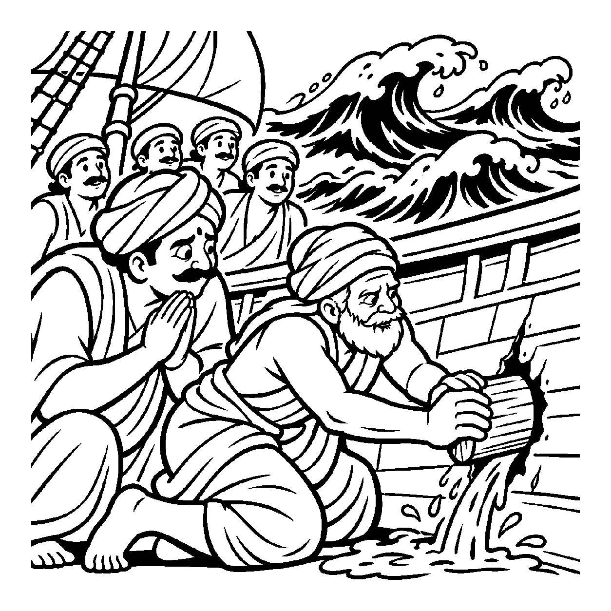

એક ધનાઢ્ય શ્રેષ્ઠીની હવેલીમાં મધ્યરાત્રિએ ચોર પ્રવેશે છે અને તિજોરી લૂંટીને નાસી જાય છે. સવારે પોલીસ અને ગામલોકો આવે છે. કોઈ કહે છે: "ચોર બહુ ચાલાક હતો, તેણે તાળું તોડી નાખ્યું!" કોઈ કહે છે: "પાળેલા કૂતરાએ ભસવાનું બંધ રાખ્યું!" પરંતુ જ્યારે ઊંડી તપાસ થાય છે ત્યારે ખબર પડે છે કે શ્રેષ્ઠી રાત્રે દારૂના નશામાં ચૂર થઈને પાછલી બારીનું આગળિયું ચડાવવાનું જ ભૂલી ગયો હતો! ચોરનું આવવું કે તાળું તૂટવું એ તો બાહ્ય નિમિત્તો હતા, પરંતુ તે તમામ નિમિત્તોનું મૂળ નિમિત્ત તો શ્રેષ્ઠીની પોતાની ગાફેલિયત અને પ્રમાદ હતો! તેવી જ રીતે આત્માના દરબારમાં જ્યારે નવા કર્મોનો આસ્રવ અને બંધ થાય છે, ત્યારે બાહ્ય પદાર્થો કે કર્મની પુદ્ગલ પ્રકૃતિઓ તો કેવળ બાહ્ય નિમિત્ત છે; વાસ્તવમાં તે બાહ્ય નિમિત્તોને આમંત્રણ આપનારું આત્માનું અંદરનું મૂળ નિમિત્ત પોતાના જ રાગ, દ્વેષ, ક્રોધ અને અજ્ઞાનરૂપ વિભાવ પરિણામો છે! નિમિત્તોની આ ગહન શૃંખલાને ઉઘાડતી દ્રષ્ટિ એટલે 'નિમિત્તત્ત્વ-નિમિત્તદ્રષ્ટિ'.
આ દ્રષ્ટિ સાધકના તમામ બાહ્ય બહાનાઓનો છેદ ઉડાડી દે છે. સાધક કહી શકતો નથી કે "મને પેલા માણસે ક્રોધ ચડાવ્યો કે ધન જોઈને લોભ થયો!" બાહ્ય વ્યક્તિ કે ધન માત્ર ઉપલક નિમિત્ત છે; તારી અંદર બેઠેલા રાગ-દ્વેષે જ તેને પકડ્યો છે. જ્યારે સાધક પોતાના અંતરંગ પરિણામોને સુધારે છે, ત્યારે બહારના તમામ નિમિત્તો આપોઆપ નિષ્પ્રભાવી બની જાય છે.
આ નય સાધકને બહાર જોવાનું બંધ કરાવી પોતાના ભાવોને શુદ્ધ કરવા પ્રેરણા આપે છે.
ચોર પ્રવેશે હવેલીમાં, બારી ખુલ્લી સાર;
નિમિત્તત્ત્વ દ્રષ્ટિ લહે, આસ્રવનો સંસાર.
પરદ્રવ્યો નિમિત્ત માત્ર છે, રાગાદિ મૂળ હેત;
અંતર પરિણામ શુદ્ધ થતાં, પ્રગટે નિર્મળ ચેત.
પરિસ્થિતિઓ કે અન્ય પર દોષ ઢોળવાને બદલે, પોતાના અંતરંગ રાગ-દ્વેષના ભાવો સુધારી આત્મજાગૃત થવું.

ધર્મક્ષેત્રના બંદરેથી એક મોટું વ્યાપારી વહાણ રત્નો ભરીને નીકળ્યું. મધદરિયે અચાનક ભારે પવન અને મોજાં ઊછળવા લાગ્યા. થોડી જ વારમાં વહાણમાં પાણી ભરાવા લાગ્યું અને વહાણ ડૂબવા લાગ્યું. મુસાફરો આકાશ તરફ હાથ જોડીને સમુદ્ર અને વાવાઝોડાને ગાળો ભાંડવા લાગ્યા: "આ સમુદ્ર રાક્ષસ જેવો છે! આ તોફાની પવને આપણું વહાણ ડુબાડી દીધું!" બધા લોકો સમુદ્રના મોજાંને જ વિનાશનું કારણ માનતા હતા. વહાણના માલિક હર્ષવર્ધનના મનમાં ભારે આક્રોશ હતો કે કુદરત તેમની વેરી બની ગઈ છે.
તે સમયે વહાણના અનુભવી વૃદ્ધ નાવિકે શાંતિથી વહાણના તળિયે જઈને જોયું. તેણે જોયું કે વહાણના લાકડામાં એક મોટું છિદ્ર હતું, જે ઘણા દિવસોથી સડી ગયું હતું અને માલિકે તેની મરામત કરાવી નહોતી! નાવિકે દોડી આવીને હર્ષવર્ધનને કહ્યું: "શેઠ! નિમિત્તત્ત્વ-નિમિત્તદ્રષ્ટિથી વિચાર કરો! આ સમુદ્ર કે પવન તમારું વહાણ નથી ડુબાડી રહ્યા; તમારા વહાણના તળિયામાં પડેલું આ છિદ્ર અને તમારી બેદરકારી જ સાચું કારણ છે! જો વહાણ અંદરથી અખંડ હોત તો સાગરના મોજાં તેને કદી ડુબાડી શકત નહીં!" નાવિકે તુરંત એક લાકડાનો મજબૂત ડૂચો મારીને છિદ્ર બંધ કરી દીધું અને પાણી ઉલેચી નાખ્યું. વહાણ ફરી સંતુલિત થઈ ગયું અને તોફાનમાંથી હેમખેમ બહાર નીકળી ગયું! હર્ષવર્ધનને સત્ય સમજાઈ ગયું. તેણે અન્યો પર દોષ ઢોળવાનું છોડી દીધું અને પોતાના અંતરના દોષો સાફ કર્યા. તેનું ચિત્ત પરમ આત્મનિરીક્ષણ સાથે સહજ શાંતિમાં ડૂબી ગયું.
જો જીવ કેવળ અંતરંગ રાગાદિને જ માની બાહ્ય નિમિત્તો, સંગત અને સંયોગોની અસરનો સાવ ઈનકાર કરે, તો તે કુસંગતમાં પડીને પતન પામે છે. એક જ પાસાને પકડી રાખવાથી વસ્તુની સમગ્ર અનેકાંતમય સત્તા વિખંડિત થાય છે અને સાધક પોતાના જ એકાંગી આગ્રહના બંધનમાં ફસાઈને સાચી શાંતિ ગુમાવી બેસે છે.
આ નય અંતરંગ પરિણામોને કર્માસ્રવનું મૂળ નિમિત્ત બતાવી આત્મજાગૃતિ વધારે છે, જેથી સાધક હું-પણાને ખોઈને પોતાના આત્મસ્વરૂપમાં સ્થિર થાય છે.